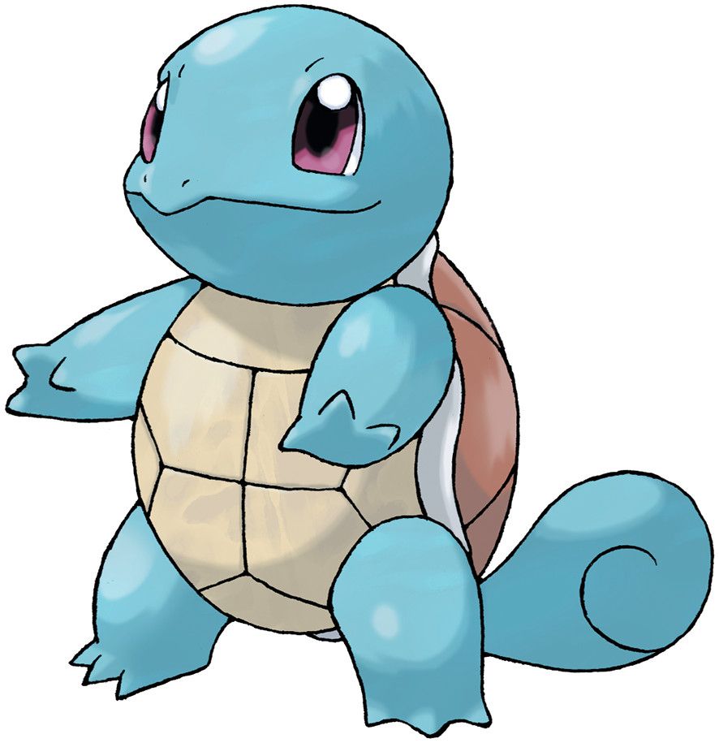

Charmander
Charmander was designed as a fire Pokémon for the first generation of Pocket Monsters games Red and Green

Bulbasaur
Bulbasaur was designed by Atsuko Nishida, one of the character designers for Pocket Monsters Red and Blue

Squirtle
Squirtle was designed as one of the starter Pokémon of Pocket Monsters Red and Green by Atsuko Nishida, who based its design on its final form

Pikachu
Pikachu is a fictional species in the Pokémon media franchise. Designed by Atsuko Nishida and Ken Sugimori